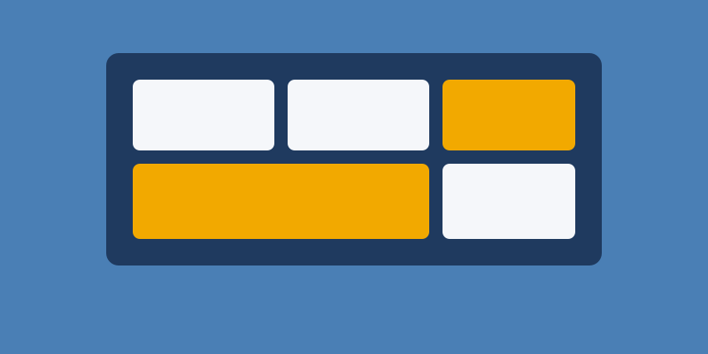

Sitio web personal
Mi primer sitio construido con HTML5 semántico y estilizado con CSS, enfocado en la estructura y la accesibilidad.
HTML5 CSS AccesibilidadEstos son algunos de los proyectos en los que trabajé mientras aprendía desarrollo web. Cada uno me ayudó a mejorar mis habilidades.


Galería de los proyectos que fui construyendo.
Mi primer sitio construido con HTML5 semántico y estilizado con CSS, enfocado en la estructura y la accesibilidad.
HTML5 CSS Accesibilidad
Una pequeña aplicación para organizar tareas diarias y practicar la manipulación del contenido de la página.
HTML CSS JavaScriptRediseño de este mismo sitio con una grilla maestra y diseño mobile-first, para que se adapte a celular, tablet y escritorio.
CSS Grid Flexbox Media queries